전기공사산업기사 (2007-05-13 기출문제)
1과목: 전기응용
1. 곡선도로 조명상 조명기구의 배치 조건이 가장 적당한 것은?
- 양측 배치의 경우는 지그재그식으로 한다.
- 한쪽만 배치하는 경우는 커브 바깥쪽에 배치한다.
- 직선도로에서 보다 등 간격을 조금 더 넓게 한다.
- 곡선도로의 곡률 반지름이 클수록 등 간격을 짧게 한다.
(정답률: 82%)

2. 휘도 B[sb], 반지름 r[m]인 등휘도 완전 확산성 구 광원의 전광속 F[lm]은 얼마인가?
- 4r2B
- πr2B
- π2r2B
- 4π2r2B
(정답률: 75%)
3. 200W 전구를 우유색 구형 글로브에 넣었을 경우 우유색 유리의 반사율은 40%, 투과율은 50%라고 할 때 글로브의 효율은 약 몇 %인가?
- 20
- 40
- 50
- 83
(정답률: 80%)
4. 폭 24m인 거리의 양쪽에 20m의 간격으로 지그재그식으로 등주를 배치하여 도로상의 평균 조도를 5[lx]로 하고자 한다. 각 등주상에 몇 [lm]의 전구가 필요한가? (단, 도로면에서의 광속 이용률은 25%이다.)
- 4000
- 4500
- 4800
- 5000
(정답률: 58%)
5. 플랭크의 방사법칙을 이용하여 온도를 측정하는 것은?
- 광고온계
- 방사 온도계
- 열전 온도계
- 저항 온도계
(정답률: 47%)
6. 열전도율을 표시하는 단위는?
- [J/㎏ㆍdeg]
- [W/m2ㆍdeg]
- [W/mㆍdeg]
- [J/m3ㆍdeg]
(정답률: 70%)
7. 전기차의 속도제어 방식 중 VVVF 제어법은 무엇인가?
- 주파수와 전압을 동시에 제어하는 방법이다.
- 주파수를 고정하고 전압만 제어하는 방식이다.
- 전압을 고정하고 주파수만 제어하는 방식이다.
- 초퍼제어 방식이다.
(정답률: 77%)
8. 인버터(inverter)는 어떤 전력의 변환인가?
- 교류를 교류로 변환
- 직류를 직류로 변환
- 교류를 직류로 변환
- 직류를 교류로 변환
(정답률: 71%)
9. 제어계의 각 부에 전달되는 모든 신호가 시간의 연속함수인 귀환 제어계는?
- 연속데이터 제어계
- 릴레이형 제어계
- 간헐형 제어계
- 개회로 제어계
(정답률: 70%)
10. 다음 중에서 기동 토크가 가장 큰 특성을 갖는 전동기는?
- 직류 분권전동기
- 직류 직권 전동기
- 3상 농형 유도 전동기
- 3상 동기 전동기
(정답률: 83%)
11. 전지에서 자체 방전 현상이 발생하는 주된 요인은?
- 전해액 농도
- 이온화 경향
- 전해액 온도
- 불순물 혼합
(정답률: 90%)
12. 저항의 발열체로서의 구비 조건과 관계가 없는 것은?
- 내열성이 커야한다.
- 내식성이 커야 한다.
- 가공하기 쉽고 압연성이 풍부하며 가공이 쉬워야 한다.
- 저항이 비교적 작고 온도계수가 크고 (－) 이어야 한다.
(정답률: 66%)
13. 다음 용접 방식 중 저항용접에 속하는 것은?
- 프로젝션 용접
- 금속 아크 용접
- 가스 용접
- 단 접
(정답률: 68%)
14. 저항 가열은 어떤 원리를 이용한 것인가?
- 유전체손
- 아크손
- 히스테리시스손
- 줄열
(정답률: 75%)
15. 직류-직류 변환기이고 전기철도의 직권전동기 등 속도제어에서 전기자 전압을 조정하면 속도 제어가 되는 것은?
- 듀얼 컨버터
- 사이클로 컨버터
- 초퍼
- 인버터
(정답률: 87%)
16. 궤조를 직류 전차선 전류의 귀로로 사용할 때에는 폐색구간의 경계를 귀로 전류가 흐르게 하여야 되는데 이와 같은 목적을 이루기 위하여 각 구간의 경계는 무엇으로 연결하여야 하는가?
- 열차 단락 감도
- 궤도회로
- 임피던스 본드
- 연동장치
(정답률: 68%)
17. 열이 이동하는 방식에는 전도, 대류, 복사의 세 가지 방식이 있다. 다음 중 복사에 해당 하는 것은?
- 도체를 통하여 이동한다.
- 기체를 통하여 이동한다.
- 액체를 통하여 이동한다.
- 전자파로 이동한다.
(정답률: 85%)
18. 광도가 160cd인 점광원으로부터 4m 떨어진 거리에서, 그 방향과 직각인 면과 기울기 60°로 설치된 간판의 조도는 몇 [lx]인가?
- 3
- 5
- 10
- 20
(정답률: 85%)
19. 3상 유도전동기의 플러깅(plugging)이란?
- 플러그를 사용하여 전원에 연결하는 방법
- 운전 중 2선의 접속을 바꾸어 상회전을 반대로 제동하는 방법
- 단상상태로 기동할 때 일어나는 현상
- 고정자와 회전자의 상수가 일치하지 않을 때 일어나는 현상
(정답률: 75%)
20. 전기화학당량의 단위는?
- [C/g]
- [g/C]
- [g이온/㎏용매]
- [Ω/m]
(정답률: 75%)
2과목: 전력공학
21. 원자로에서 카드뮴(Cd) 막대가 하는 일을 옳게 설명한 것은?
- 원자로내에 중성자를 공급한다.
- 원자로내에 중성자 운동을 느리게 한다.
- 원자로내의 핵분열을 일으킨다.
- 원자로내에 중성자수를 감소시켜 핵분열의 연쇄반응을 제어한다.
(정답률: 43%)
22. 정사각형으로 배치된 4도체 송전선이 있다. 소도체의 반지름이 1㎝이고, 한 변의 길이가 32㎝일 때, 소도체간의 기하학적 평균거리는 몇 [㎝]인가?
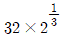
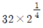
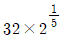
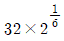
(정답률: 20%)
23. 이상전압의 발생 우려가 가장 적은 중성점 접지방식은?
- 저항 접지방식
- 소호리액터 접지 방식
- 직접 접지방식
- 비접지방식
(정답률: 24%)
24. 전력선에 의한 통신선로의 전자유도 장해의 발생 요인은 주로 무엇 때문인가?
- 영상전류가 흘러서
- 부하전류가 크므로
- 전력선의 교차가 불충분하여
- 상호 정전용량이 크므로
(정답률: 32%)
25. 5700kcal/㎏의 석탄을 150ton 소비해서 200000kwh를 발전하였을 때, 발전소의 효율은 약 몇 %인가?
- 12
- 16
- 20
- 24
(정답률: 30%)
26. 부하가 선간전압 3300V, 피상전력 330kVA, 역률 0.7인 3상 부하가 있다. 부하의 역률을 0.85로 개선하는 데 필요한 전력용콘덴서의 용량은 약 몇 [kVA]인가?
- 63
- 73
- 83
- 93
(정답률: 20%)
27. 송전선로의 코로나 손실을 나타내는 Peek 식에서 Eo에 해당하는 것은? (단, Peek식
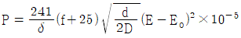
[kW/km/선]이다)- 코로나 임계전압
- 전선에 걸리는 대지전압
- 송전단 전압
- 기준충격 절연강도 전압
(정답률: 49%)
28. PWR(Pressurized Water Reactor)형 발전용 원자로에서 감속재, 냉각재 및 반사체로서의 구실을 겸하여 주로 사용되고 있는 것은?
- 경수(H2O)
- 중수(D2O)
- 흑연
- 액체금속(Na)
(정답률: 37%)
29. 수차의 특유속도(specific speed)를 구하는 공식은? (단, 유효낙차 : H[m], 수차의 출력 : P[kW], 수차의 정격회전수 : n[rpm], 특유속도 : Ns[rpm]이라 한다.)
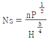
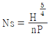
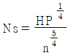
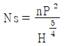
(정답률: 30%)
30. 고압 배전선로의 선간전압을 3300V에서 5700V로 승압하는 경우, 같은 전선으로 전력손실을 같게 한다면 약 몇 배의 전력을 공급할 수 있는가?
- 1.5
- 2
- 3
- 4
(정답률: 42%)
31. 송전계통의 안정도 증진방법에 대한 설명으로 옳지 않은 것은?
- 고장 시 발전기 입∙출력을 불평형을 작게 한다.
- 전압변동을 작게 한다.
- 고장전류를 줄이고 고정구간을 신속하게 차단한다.
- 직렬리액턴스를 크게한다.
(정답률: 50%)
32. 전력용콘덴서에 직렬로 콘덴서 용량의 5% 정도의 유도리액턴스를 삽입하는 목적은?
- 제3고조파를 제거시키기 위하여
- 제5고조파를 제거시키기 위하여
- 이상전압의 발생을 방지하기 위하여
- 정전용량을 조절하기 위하여
(정답률: 46%)
33. 전송전력이 400MW, 송전거리가 200km인 경우의 경제적인 송전전압은 약 몇 [kV]인가? (단, still의 식에 의하여 산정한다.)
- 57
- 173
- 353
- 645
(정답률: 33%)
34. 총낙차 300m, 사용수량 20m3/s인 수력발전소의 발전기 출력을 약 몇 [MW]인가? (단, 수차 및 발전기효율은 각각 90%, 98%이고 손실 낙차는 총낙차의 6%라 한다.)
- 49
- 52
- 77
- 87
(정답률: 14%)
35. 다음 중 수력발전소의 저수지 용량 등을 결정하는데 사용되는 것으로 가장 적합한 것은?
- 적산 유량곡선
- 수위 유량곡선
- 유황곡선
- 유량도
(정답률: 41%)
36. 전력선과 통신선과의 상호인덕턴스에 의하여 발생되는 유도장애는?
- 전력유도장해
- 고조파 유도장해
- 전자유도장해
- 정전유도장애
(정답률: 54%)
37. 화력 발전소의 재열기(reheater)의 목적은?
- 급수를 가열한다.
- 석탄을 건조한다.
- 공기를 예열한다.
- 증기를 가열한다.
(정답률: 30%)
38. 압축된 공기를 아크에 불어 넣어서 차단하는 차단기는?
- ABB
- MBB
- VCB
- ACB
(정답률: 37%)
39. 3상 3선식 배전선로서 역률이 0.8(지상)인 3상 평형 부하 40[kW]를 연결했을 때 전압 강하는 약 몇 [V]인가? (단, 부하의 전압은 200[V], 전선 1조의 저항은 0.02[Ω]이고 리액턴스는 무시한다.)
- 2
- 3
- 4
- 5
(정답률: 28%)
40. 계통의 기기 절연을 표준화하고 통일된 절연 체계를 구성하는 목적으로 절연계급을 설정하고 있다. 이 절연계급에 해당하는 내용을 무엇이라 부르는가?
- 제한전압
- 기준충격절연강도
- 상용주파 내전압
- 보호계전
(정답률: 36%)
3과목: 전기기기
41. 출력 4kW, 1400rpm인 전동기의 토크는 약 몇 ㎏∙m인가?
- 2.79
- 3.26
- 4.79
- 5.91
(정답률: 43%)
42. 어떤 직류 전동기의 유기전력이 200V, 매분 회전수가 1200rpm으로 토크 16.2㎏∙m를 발생하고 있을 때의 전류는 약 몇 A 인가?
- 60
- 80
- 100
- 120
(정답률: 20%)
43. 6극 직류발전기의 정류자 편수가 132, 단자전압이 220V, 직렬 도체수가 132개이고 중권이다. 정류자 편간 전압은 몇 V 인가?
- 10
- 20
- 30
- 40
(정답률: 30%)
44. 다음 중 3상 동기기의 제동권선의 역할은?
- 출력증가
- 효율증가
- 난조방지
- 역률개선
(정답률: 40%)
45. 발전기의 단락비나 동기 임피던스를 산출하는데 필요한 시험은?
- 무부하 포화 시험과 3상 단락시험
- 정상, 영상 리액턴스의 측정시험
- 돌발 단락 시험과 부하시험
- 단상 단락 시험과 3상 단락시험
(정답률: 44%)
46. 그림은 3상 동기 발전기의 무부하 포화곡선이다. 이 발전기의 포화율은 얼마인가?
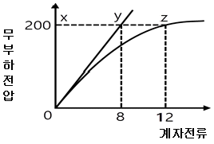
- 0.5
- 0.67
- 0.8
- 0.9
(정답률: 15%)
47. 임피던스 강하가 5%인 변압기가 운전 중 단락되었을 때 그 단락 전류는 정격전류의 몇 배인가?
- 20
- 25
- 30
- 35
(정답률: 43%)
48. 브러시를 이동하여 회전속도를 제어하는 전동기는?
- 단상 직권전동기
- 직류 직권전동기
- 반발 전동기
- 반발기동형 단상유도전동기
(정답률: 19%)
49. 어떤 변압기의 전부하 동손이 270W, 철선이 120W일 때, 이 변압기를 최고 효율로 운전하는 출력은 정격출력의 약 몇 % 가 되는가?
- 66.7
- 44.4
- 33.3
- 22.5
(정답률: 46%)
50. 4극 7.5kW, 200V, 60Hz인 3상 유도전동기가 있다. 전부하에서의 2차 입력이 7950W이다. 이 경우의 2차 효율은 약 몇 % 인가? (단, 여기서 기계손은 130W 이다.)
- 92
- 94
- 96
- 98
(정답률: 23%)
51. 동기기의 전기자 권선법이 아닌 것은?
- 중권
- 2층권
- 분포권
- 전절권
(정답률: 27%)
52. 단상 변압기에서 전부하시 2차 전압은 115V이고, 전압변동률은 2%이다. 1차 단자 전압은 몇 V 인가? (단, 1차, 2차 권선비는 20 : 1 이다)
- 2326
- 2336
- 2346
- 2356
(정답률: 24%)
53. 권선형 유도 전동기의 기동 시 2차 저항을 넣는 이유는?
- 기동 전류 증대
- 회전수 감소
- 기동 토크 감소
- 기동 전류 감소와 토크 증대
(정답률: 38%)
54. 회전 변류기의 직류측의 전압을 변경하려면 슬립링에 가해지는 교류측 전압을 변화시킨다. 그 방법이 아닌 것은?
- 직렬리액턴스에 의한 방법
- 유도전압조정기에 의한 방법
- 분류저항 삽입에 의한 방법
- 부하 시 전압조정 변압기에 의한 방법
(정답률: 16%)
55. 지름 0.2m, 속도 1800rpm인 전기자의 주변 속도는 약 몇 m/sec인가?
- 18.84
- 12.56
- 10.42
- 6.28
(정답률: 40%)
56. 1000V의 단상 교류를 전파 정류해서 150A의 직류를 얻는 정류기의 교류측 전류는 약 몇 A 인가?
- 106
- 116
- 125
- 166
(정답률: 25%)
57. 단상변압기의 병렬운전 조건에 필요하지 않은 것은?
- 극성이 일치할 것
- 출력이 반드시 같을 것
- 권수비가 같을 것
- 각 변압기의 백분율 임피던스 강하가 같을 것
(정답률: 43%)
58. 3상 유도 전동기의 원선도 작성에 필요한 기본량을 구하기 위한 시험이 아닌 것은?
- 충격전압시험
- 저항측정시험
- 무부하시험
- 구속시험
(정답률: 20%)
59. 3상 권선형 유도 전동기의 회전자에 슬립 주파수의 전압을 공급하여 속도를 변화시키는 방법은?
- 교류 여자 제어법
- 1차 저항법
- 주파수 변환법
- 2차 여자 제어법
(정답률: 34%)
60. 다음 중 1방향성 4단자 사이리스터는 어느 것인가?
- TRIAC
- SCS
- SCR
- SSS
(정답률: 26%)
4과목: 회로이론
61. 다음 중 테브난의 정리와 쌍대의 관계가 있는 것은?
- 밀만의 정리
- 중첩의 원리
- 노튼의 정리
- 보상의 정리
(정답률: 39%)
62. 전원과 부하가 다 같이 △결선된 3상 평형 회로가 있다. 전원 전압이 200V, 부하 임피던스가 6＋j8Ω인 경우 선전류는 몇 A 인가?
- 20
- 20 / √3
- 20√3
- 10√3
(정답률: 38%)
63. 정현파 교류의 실효값을 구하는 식이 잘못된 것은?
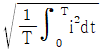
- 파고율×평균치
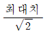
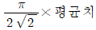
(정답률: 34%)
64. 파고율의 관계식이 바르게 표시된 것은?
- 최대값/실효값
- 실효값/최대값
- 평균값/실효값
- 실효값/평균값
(정답률: 31%)
65. 2개 교류 전압
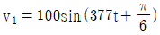
[v]와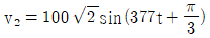
[v]가 있다. 옳게 표시된 것은?- v1과 v2의 주기는 모두 1/60[sec]이다.
- v1과 v2의 주파수는 377[Hz]이다.
- v1과 v2의 동상이다.
- v1과 v2의 실효값은 100[v], 100√2 [v]이다.
(정답률: 36%)
66. R＝10Ω, L＝0.045H의 직렬 회로에 실효값 140V, 주파수 25Hz의 정현파 교류전압을 가했을 때 임피던스[Ω]의 크기는 얼마인가?
- 17.25
- 15.31
- 12.25
- 10.41
(정답률: 30%)
67. 그림의 사다리꼴 회로에서 출력전압 VL은 몇 V 인가?
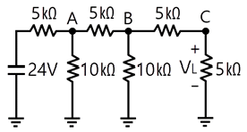
- 2
- 3
- 4
- 6
(정답률: 34%)
68. 그림 ab간에 40V의 전압을 가할 때 10A의 전류가 흐른다. r1 및 r2에 흐르는 전류비를 1 : 2로 하려면 r1 및 r2의 저항 [Ω]은 각각 얼마인가?
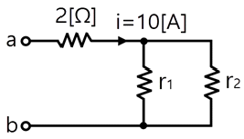
- r1＝6, r2＝3
- r1＝3, r2＝6
- r1＝4, r2＝2
- r1＝2, r2＝4
(정답률: 27%)
69. 주기적인 구형파 신호의 성분은 어떻게 되는가?
- 성분 분석이 가능하다.
- 직류분만으로 합성된다.
- 무수히 많은 주파수의 합성이다.
- 교류 합성을 갖지 않는다.
(정답률: 47%)
70. 비사인파의 실효값은 어떻게 되는가?
- 각 고조파의 실효값의 합
- 각 고조파와 실효값 제곱의 합의 제곱근
- 기본파와 3고조파 성분의 합
- 각 고조파와 실효값의 합의 평균
(정답률: 32%)
71. 불평형 3상전류 Ia＝10＋j2[A], Ib＝-20－j24[A], Ic＝-5＋j10[A]일 때의 영상전류 Io의 값은 얼마인가?
- 15＋j2[A]
- -5－j4[A]
- -15－j12[A]
- -45－j36[A]
(정답률: 44%)
72. 이상적인 변압기로 구성된 4단자 회로에서 정수 D를 구하면?
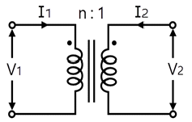
- 1
- 0
- n
- 1/n
(정답률: 32%)
73. 회로에서 단자 1-1′에서 본 구동점 임피던스 Z11은 몇 Ω 인가?
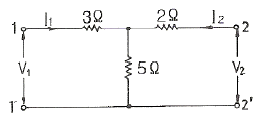
- 5
- 8
- 10
- 15
(정답률: 38%)
74.
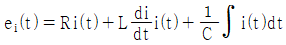
에서 모든 초기조건을 0으로 하고 라플라스 변환하면 어떻게 되는가?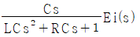
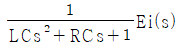
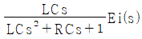
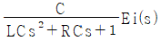
(정답률: 39%)
75.
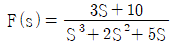
일 때 f(t)의 최종값은?- 0
- 1
- 2
- 3
(정답률: 58%)
76. R-L-C 직렬회로에서 L＝0.1×10-3[H], R＝100[Ω], C＝0.1×10-6[F]일 때 이 회로는?
- 비진동적이다.
- 진동적이다.
- 정현파로 진동한다.
- 진동과 비진동을 반복한다.
(정답률: 35%)
77. 그림과 같은 피드백 회로의 전달함수는?
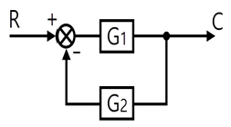
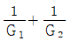
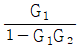
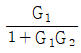
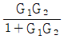
(정답률: 30%)
78. R-C 직렬회로의 시정수는 RC이다. 시정수의 단위는 어떻게 되는가?
- Ω
- Ω㎌
- sec
- Ω/F
(정답률: 47%)
79. 회로방정식의 특성근과 회로의 시정수에 대하여 바르게 서술된 것은?
- 특성근과 시정수는 같다.
- 특성근의 역(逆)과 회로의 시정수는 같다.
- 특성근의 절대값의 역과 회로의 시정수는 같다.
- 특성근과 회로의 시정수는 서로 상관되지 않는다.
(정답률: 18%)
80. 어느 3상 회로의 선간전압을 측정하니 Va＝120[V], Vb＝-60－j80[V], Vc＝-60＋j80[V]이었다. 불평형률[%]은?
- 13
- 27
- 34
- 41
(정답률: 19%)
5과목: 전기설비
81. 전력보안 가공통신선을 도로 위 철도 또는 궤도, 횡단보도교 위 등이 아닌 일반적인 장소에 시설하는 경우에는 지표상 몇 [m] 이상으로 시설하여야 하는가?
- 3.5
- 4
- 4.5
- 5
(정답률: 23%)
82. 제1종 또는 제2종 접지공사에 사용하는 접지선을 사람이 접촉할 우려가 있는 곳에 시설하는 경우에 그 접지선의 어느 부분까지 합성수지관 또는 이와 동등 이상의 절연효력 및 강도를 가지는 몰드로 덮어야 하는가?
- 지하 50㎝로부터 지표상 1.6m까지의 부분
- 지하 60㎝로부터 지표상 2m까지의 부분
- 지하 75㎝로부터 지표상 2m까지의 부분
- 지하 80㎝로부터 지표상 1.8m까지의 부분
(정답률: 40%)
83. 시가지에 시설되어 있는 가공 직류 전차선의 장선에는 가공 직류 전치선간 및 가공 직류 전차선으로부터 60㎝이내의 부분 이외에 접지공사를 할 때, 제 몇 종 접지공사를 하여야 하는가?
- 제1종 접지공사
- 제2종 접지공사
- 제3종 접지공사
- 특별 제3종 접지공사
(정답률: 35%)
84. 농사용 저압 가공 전선로의 경간은 몇 [m] 이하이어야 하는가?
- 30
- 50
- 60
- 100
(정답률: 29%)
85. 터널 등에 시설하는 고압배선이 그 터널 등에 시설하는 다른 고압배선, 저압배선, 약전류전선 등 또는 수관∙가스관이나 이와 유사한 것과 접근하거나 교차하는 경우에는 몇 [㎝] 이상 이격하여야 하는가?
- 10
- 15
- 20
- 25
(정답률: 19%)
86. 특별고압전선로에 접속하는 배전용 변압기의 1차 전압은 몇 [V] 이하이어야 하는가?
- 20000
- 25000
- 30000
- 35000
(정답률: 36%)
87. 고압이상의 전압조정기의 내장권선(內臟券線)을 이상전압으로부터 보호하기 위하여 특히 필요한 경우에는 그 권선에 제 몇 종 접지공사를 하여야 하는가?
- 제1종 접지공사
- 제2종 접지공사
- 제3종 접지공사
- 특별 제3종 접지공사
(정답률: 27%)
88. 조상기의 보호장치로서 내부 고장 시에 자동적으로 전로로부터 차단하는 장치를 하여야 하는 조상기 용량은 몇 [kVA] 이상인가?
- 5000
- 7500
- 10000
- 15000
(정답률: 41%)
89. 전기온상의 발열선의 온도는 몇 [℃]를 넘지 아니하도록 시설하여야 하는가?
- 70
- 80
- 90
- 100
(정답률: 29%)
90. 저압가공전선과 고압가공전선을 동일 지지물에 시설하는 경우 저압가공전선과 고압가공전선과의 이격거리는 몇 [㎝] 이상이어야 하는가?
- 40
- 50
- 60
- 70
(정답률: 40%)
91. 인가가 많이 연접되어 있는 장소에 시설하는 가공전선로의 구성재에 병종풍압하중을 적용할 수 없는 경우는?
- 저압 또는 고압 가공전선로의 지지물
- 저압 또는 고압 가공전선로의 가섭선
- 사용전압이 35000V 이하의 특별고압 절연전선 또는 케이블을 사용하는 특별고압 가공전선로의 지지물
- 사용전압이 35000V 이상인 특별고압 가공전선로에 사용하는 케이블 및 조가용선
(정답률: 31%)
92. 특별고압 가공전선이 삭도와 제2차 접근 상태로 시설할 경우에 특별고압 가공전선로는 어느 보안공사를 하여야 하는가?
- 고압 보안공사
- 제1종 특별고압 보안공사
- 제2종 특별고압 보안공사
- 제3종 특별고압 보안공사
(정답률: 36%)
93. 3kV의 고압옥내배선을 케이블공사로 설계하는 경우 사용할 수 없는 케이블은?
- 연피케이블
- 비닐외장케이블
- MI케이블
- 클로로프렌외장케이블
(정답률: 38%)
94. 일반주택 및 아파트 각 호실의 현관등에 조명용 백열전등을 설치할 때, 몇 분 이내에 소등되는 타임스위치를 시설하여야 하는가?
- 1
- 2
- 3
- 5
(정답률: 48%)
95. 금속관공사를 콘크리트에 매설하여 시행하는 경우 관의 두께는 몇 [㎜] 이상이어야 하는가?
- 1.0
- 1.2
- 1.4
- 1.6
(정답률: 58%)
96. 가로등, 경기장, 공장, 아파트 단지 등의 일반 조명을 위하여 시설하는 고압방전등은 그 효율이 몇 [lm/W] 이상의 것이어야 하는가?
- 30
- 50
- 70
- 100
(정답률: 35%)
97. 전개된 건조한 장소에서 400V 이상의 저압 옥내배선을 할 때 특별한 경우를 제외하고는 시행할 수 없는 공사는?
- 애자사용공사
- 금속덕트공사
- 버스덕트공사
- 합성수지몰드공사
(정답률: 18%)
98. 수상 전선로를 시설하는 경우 알맞은 것은?
- 사용전압이 고압인 경우에는 제3종 캡타이어 케이블을 사용한다.
- 가공 전선로의 전선과 접속하는 경우, 접속점이 육상에 있는 경우에는 지표상 4m 이상의 높이로 지지물에 견고하게 붙인다.
- 가공 전선로의 전선과 접속하는 경우, 접속점이 수면상에 있는 경우, 사용전압이 고압인 경우에는 수면상 5m 이상의 높이로 지지물에 견고하게 붙인다.
- 고압 수상 전선로에 지락이 생기 때에 대비하여 전로를 수동으로 차단하는 장치를 시설한다.
(정답률: 15%)
99. 특별고압 가공 전선로의 유도전류는 사용전압이 60000V 이하인 경우에는 전화선로의 길이 12km마다 몇 [㎂]를 넘지 아니하도록 시설하여야 하는가?
- 1.5
- 2
- 2.5
- 3
(정답률: 26%)
100. 저압 옥내간선은 특별한 경우를 제외하고 다음 중 어느 것에 의하여 그 굵기가 결정되는가?
- 변압기 용량
- 전기방식
- 부하의 종류
- 허용전류
(정답률: 31%)